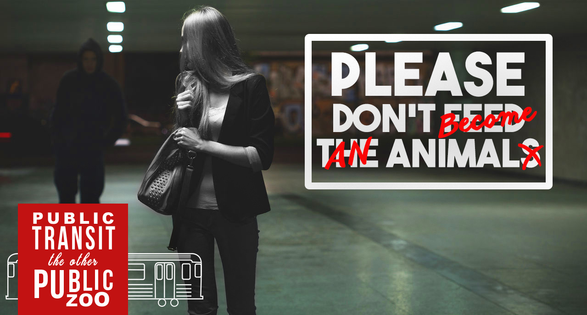
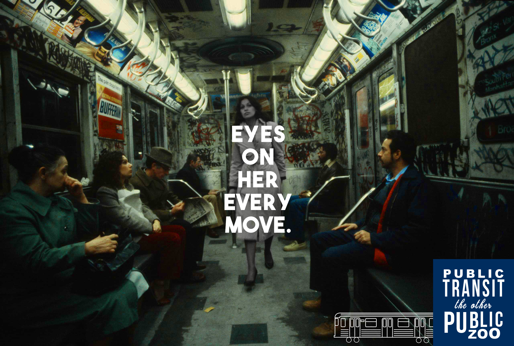
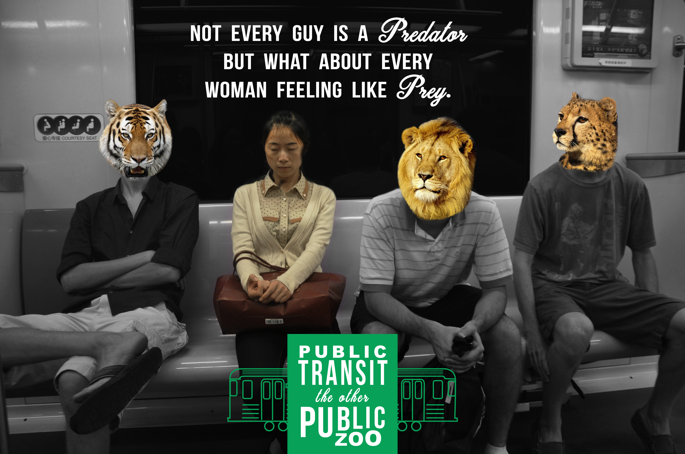
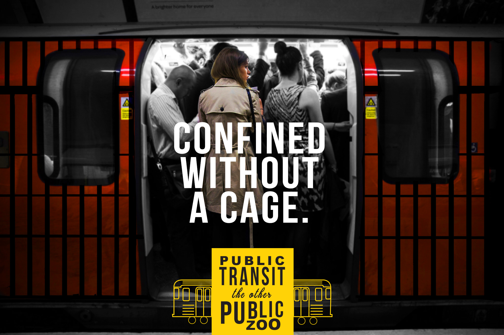
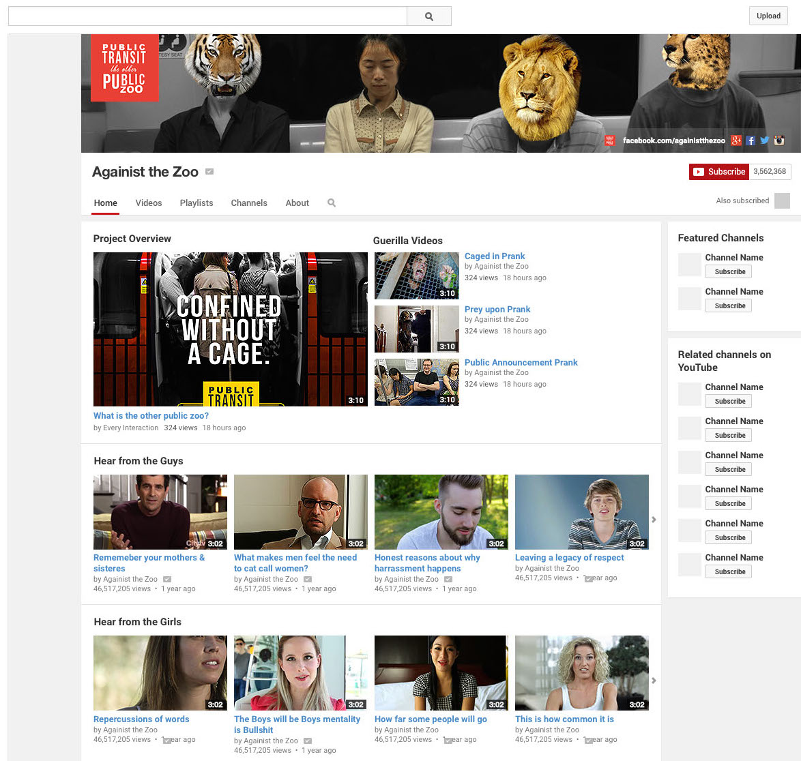
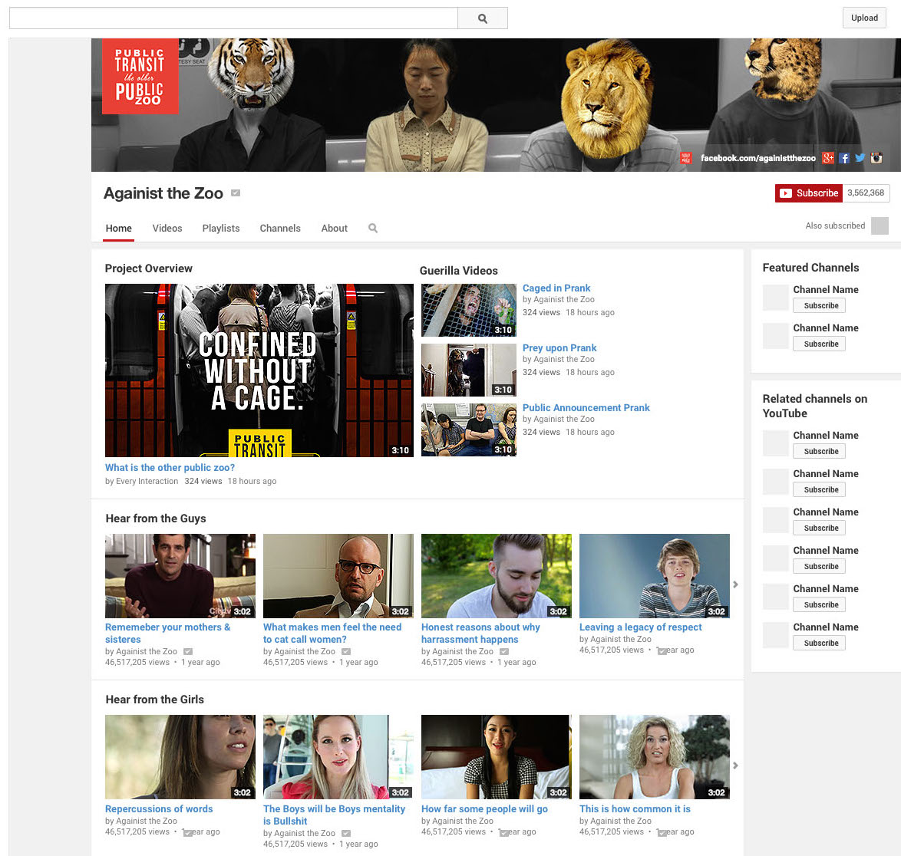

Subway Advertisements
These four out-of-home advertisements look to catch peoples attention & and make them think about how women are treated in the environment of public transit. There is a sense of uncomfort and friction within the pictures that is accentuated through the contrasting color and black & white. They are all to be placed in distinct areas in which an individual would hopefully see them one after another as they are using the transit system.





 
